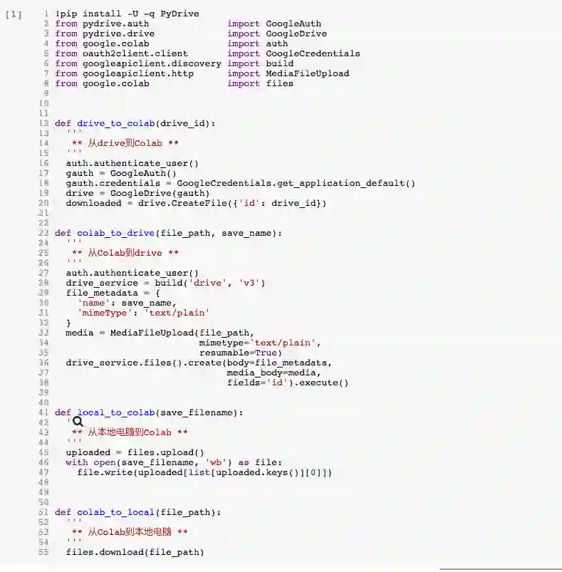

一个二分类的机器学习, 用TensorFlow写的, 刚好看到google提供的免费褥羊毛GPU, 虽然坑很多, 但还是部署上去了,GPU效率真的比CPU强的多多.
官方完整的帮助连接 在这里,注意上面的代码是基于Python2的, 我用的python3
数据集准备
CSV之类的轻量数据集
PASS, 有即可
TFRecord重量数据集
可以类似我这样子, 将数据存储到目录下Datasets下, 推荐tar压缩
tar zcvf Datasets.gz Datasets
自行配置好谷歌Drive, 链接
https://www.google.com/drive/
下载符合电脑版本, 把数据集存入同步到云端.
如何上传
打开你的Colaboratory-new一个jupyter脚本.
小文件上传
from google.colab import files
# 你需填的:
FILE_NAME = '想保存到Colaboratory的文件名'
uploaded = files.upload()
with open(FILE_NAME, 'wb') as file:
file.write(uploaded[list[uploaded.keys()][0]])
对应的python执行上述代码后, 会出现
Choose file按钮, 选择本地文件确认即可上传, 默认在当前路径, 可用!ls -l查看下
大文件上传
下面开始我就没有试过python2了,都是基于python3
如果是大文件上传, 就按照前面的准备, 我们已经把文件传到了GoogleDrive云盘.
Now, 在浏览器打开Drive找到那个文件, 右键->查看共享链接: -> 拷贝id=后面这个key, 粘贴到下方代码的位置
# 这行代码相当于unix,会去帮我们安装这个包
!pip install -U -q PyDrive
from pydrive.auth import GoogleAuth
from pydrive.drive import GoogleDrive
from google.colab import auth
from oauth2client.client import GoogleCredentials
# 你需填的:
PACKAGE_ID = 'key粘贴到这里'
PACKAGE_NAME = 'drive文件的名字还是Colaboratory将存储的名字呢,你自己试试, 我就是填drive对应的名字'
auth.authenticate_user()
gauth = GoogleAuth()
gauth.credentials = GoogleCredentials.get_application_default()
drive = GoogleDrive(gauth)
downloaded = drive.CreateFile({'id':PACKAGE_ID})
downloaded.GetContentFile(PACKAGE_NAME)
print('Transpose succeed.')
执行上述代码, 会弹出一个授权链接和一个授权码输入框, 授权链接授权后会给你这串授权码,粘贴回车即可.依然可以用
!ls -l查看下,Colaboratory有自带一些命令的, 在/bin下, 所以可以用tar命令进行解压:tar czvf Datasets.gz
训练后的内容数据如何下载
训练后的模型-tensorBoardLog等文件我们会把它下载下来, 以便我们后续使用. so, 这里来记录下如何下载下来
小文件
from google.colab import files
# 你需要填的:
FILE_PATH = '下载的文件路径'
files.download(FILE_PATH)
大文件
大文件还是推荐打包, tar:
from google.colab import auth
from googleapiclient.discovery import build
from googleapiclient.http import MediaFileUpload
# 你需要填的:
SAVE_INTODRIVE_NAME = '想以什么名字保存到drive'
FILE_PATH = '想下载的文件路径'
auth.authenticate_user()
drive_service = build('drive', 'v3')
file_metadata = {
'name':SAVE_INTODRIVE_NAME,
'mimeType': 'text/plain'
}
media = MediaFileUpload(FILE_PATH,
mimetype='text/plain',
resumable=True)
created = drive_service.files().create(body=file_metadata,
media_body=media,
fields='id').execute()
print('File ID: {}'.format(created.get('id')))
print('Transpose succeed.')
封装起来就轻松很多了
这是简单封装起来, 输入对应参数就直接使用了:
连接:
https://drive.google.com/file/d/1L7exa7j9ALc7J_PolwzNO3PlZDBmp4C-/view?usp=sharing
